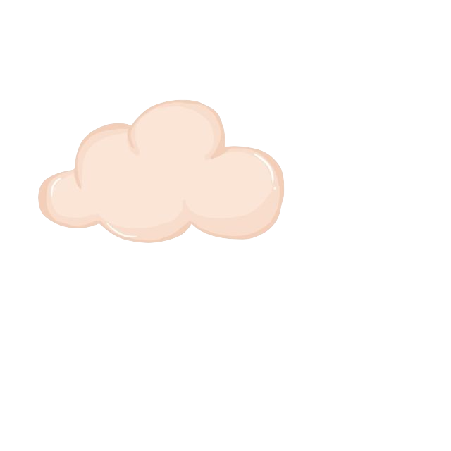

so you need a break?
Visual artist and designer Laleh Khorramian on knowing when to take a step back, and how illness gave her a different perspective on the role of art in her life.
Why did you decide to leave NYC and to move upstate?
It was a long time coming. The last two of my 10 years in New York was a residency in Vienna, Austria, so there was a time of not really feeling like New York was the place for me—but I had a career, and things were rolling along, so there wasn’t a reason to get up and move. There wasn’t an invitation to leave.
The recession had happened while I was abroad, and so I came back to things being very different economically. It was a number of things. I no longer had my New York gallery. I was finding myself unable to afford living there. I had a relationship end, I had been in Europe for two years… It’s completely different, and I just didn’t want to be back in New York by any means. Just everything pointed to, “Time to go. This is not the place I want to be, nor can I afford to be here anymore.”
I remember I had a solo booth at Statements in Switzerland, and for a year I worked on that work. But somehow things felt off. I wasn’t connected to what I was doing. It was after that show that I said, “If this show doesn’t go in a certain way, I’m going to stop for a while.” That’s what happened. It just felt like there was something I needed to recover somehow in order to move forward.
I ended up going to a place that was a friend’s farm. They said, “Come here. Just heal. Get out of the city.” I honestly never saw myself going back. For me, it was a permanent move to begin with. I wasn’t thinking, “Oh, how can I stay? Am I going to be able to live out of the city?” I was pretty dead set on never going back. At that time, I’d opted out of making “art” for a bit. I made a complete change. I said, “I don’t want to make art for a while. I want to leave the city. I want to de-complicate my life of needing a studio.” I was in the process of trying to do a science fiction movie that needed funding, and I decided, “I don’t want all that. I want to simplify.”
I’d always sewn since I was kid, and it was something that was a peaceful activity for me. I needed something peaceful, something therapeutic, and something where I could regroup and not have the emotional demands that making art did—which I usually very much enjoyed, but I wasn’t enjoying at that time. I was going through a difficult time of transition, and I felt like the easier way to find peace was going to be through making an edit down of my practice and the demands of my life.
Soon enough that became a clothing line, LALOON, and then that became a company, and I went full force into that. I enjoyed making something that was like a disguise for a while, having this alter-ego practice. My aunt was a seamstress and a tailor, and so all my life I was around it. I just got to discover myself and discover new directions through sewing. It was a great thing.
Now I feel like I’ve been merging it into more of one world. From the urging of my gallery in Dubai, they said, “You should have a show again, and you should do stuff again. Don’t stay away for too long.” I thought I would give it a try, it was just too much a part of me to let go. It’s what I want to do and love to do, but I was mad at art for a while and needed time away, and then I found a way to bring clothing into that. Textiles, or whatever it was that I’d fallen into doing, was something I enjoyed as well. I wasn’t thinking of myself as now a clothing person or a fashion designer. I thought of myself as an artist who is making clothes.
The last exhibition with The Thirdline in Dubai was the first time I introduced this work in a context like that. I showed the kimonos along with two-dimensional work, and there wasn’t much of a response.
I think the gallery was unsure whether they wanted to work with the textiles. It was a new medium for me and perhaps it was too soon after a long period of not showing. Honestly, I don’t think I’ve yet had the proper platform to show this stuff since I’ve started making textile works.
You have a number of approaches—when there are so many things in your toolbox, how do you decide to go forward with a particular project? How do you narrow down how you’re going to go about something?
At the moment, I’m working in a lot of different mediums, but I’m not always like that. I’m spreading myself a little bit thin, because I’m exploring in a way that I think is necessary, and that feels right. I’ve got to create work and then read that. It tells me where to go. Shows guide that, too.
For example, about five years ago I was making a cycle of films about the five elements, and I’d come to the last one. Ether. I shelved the film. It was that science fiction film that I’d worked on for a long time. I was writing the script with the actor and then when it came to the funding, it was just bad timing. I wondered, “Maybe there’s another way I’m supposed to make this.” So, I shelved it, and thats when I went in the direction of the clothing. Recently, it’s come back up, and some people have been saying, “Can you make the film now?” I feel like, actually, the film is still relevant even after these years. It’s still a relevant topic, and I do want to make it, but I don’t have the desire to make a film in the same way that I usually make a film, so I’ve grown more interested in collaborations, what different things I can do, and different directions of making something.
I think somehow the textile work is going back into the science fiction realm, but almost just by virtue of making the artifacts that go into that world for the film. The film itself hasn’t happened, and maybe it won’t happen, and maybe it will, or maybe it’s going to happen in another way. Maybe it’ll be an opera or an amusement park ride. I have no idea. I’m in this place where I’m experimenting a lot and also working with other people, which is really something I’ve always wanted but never quite knew how to do.
Since you do have all these approaches and mediums, I imagine if one thing feels blocked, you can move onto something else.
I do get creative blocks now and then, but then, like you said, I have other things. I do like to have a few balls rolling at once. It’s innate. I work better when I can pinball between mediums a little.
Also, as non-musicians, I have a band, Bauch Bein Po, with two artist friends. It’s a really ridiculous band, and we just make really stupid fun music, and we don’t take ourselves seriously at all. We started it when I was in Austria. We made a YouTube channel with a couple of our videos. We just like making fun songs that are actually quite political although sung entirely in German. It’s completely meaningless, but when I’m blocked and I don’t know what to work on, I make a video or song or something, and it’s a breath of fresh air. It’s fun and it puts me in my place.
